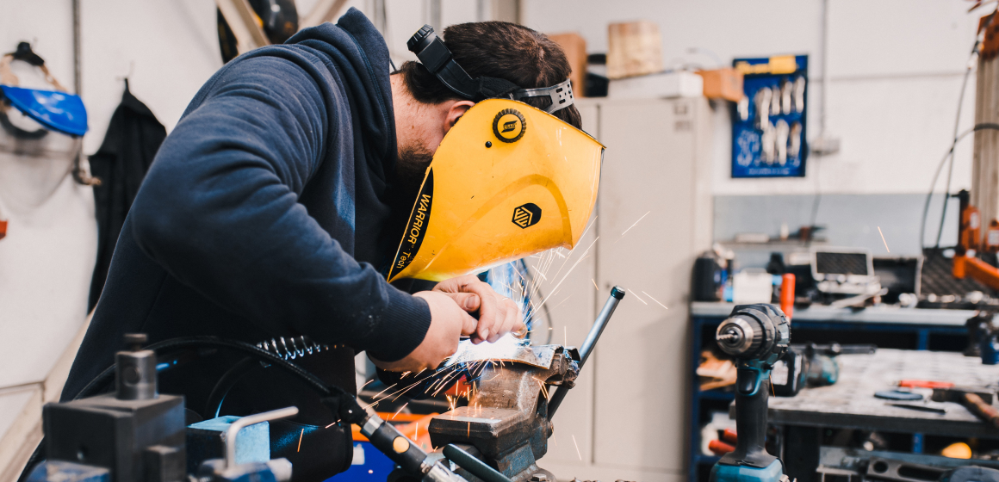

<section class="about">
  <div class="about__container">
    <article class="about-content">
      <h2 class="about-content__title title">О предприятии</h2>
      <div class="about-content__box">
        <p class="about-content__text text">
          За 20 лет развития в структуре завода сформирован мощный производственный потенциал, научно-технический центр,
          испытательная лаборатория, современная база, учебный центр и широкая сеть региональных и международных
          представительств
          в Российской Федерации, Республике Беларусь, Узбекистане и Казахстане.
        </p>
        <p class="about-content__text text">
          В номенклатуре выпускаемой НПП «ПИОНЕР» продукции найдется все, что необходимо для успешного решения задачи
          автоматизации технологических процессов на любом предприятии. Все средства измерения производства «ПИОНЕР»
          внесены
          в Государственный реестр СИ и имеют необходимые разрешительные документы.
        </p>
        <p class="about-content__text text">
          Ежегодно НПП «ПИОНЕР» реализует несколько проектов по модернизации серийных и разработке новых приборов,
          призванные
          в наибольшей степени удовлетворять возрастающие требования наших заказчиков.
        </p>
      </div>
      <div class="about-content__images">
        
        
      </div>
    </article>
  </div>
</section>
